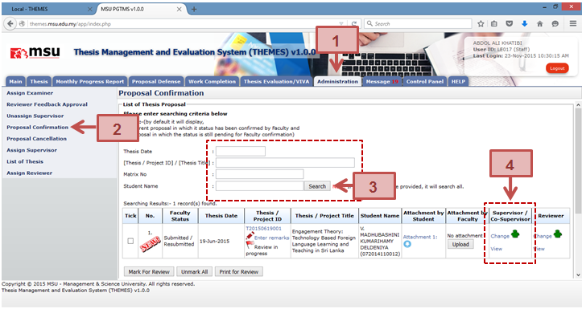

Figure 31: Administration Tab – Assign Supervisor via Proposal Confirmation
Prerequisite
Student has submitted the thesis proposal
Steps
- Click on the Administration tab on the system Top Panel section.
- Click on the proposal Confirmation menu on the system Left Panel.
- Enter the searching criteria if to find the specific result or just click the Search button to list all the result.
- The searching results will be displayed under the searching result table. Click the Assign/Change link to assign the Supervisor / Co-Supervisor to the student. The Assign link indicates the staff is yet to be assigned as Supervisor / Co-Supervisor. The Change link indicates the staff is already assigned as Supervisor / Co-Supervisor. The next following steps please follow the same steps as described in Assign Supervisor section.
Next Action
The Faculty user can confirm the status of the thesis proposal.
Warning
None
Note
None
Created with the Personal Edition of HelpNDoc: Full-featured Documentation generator